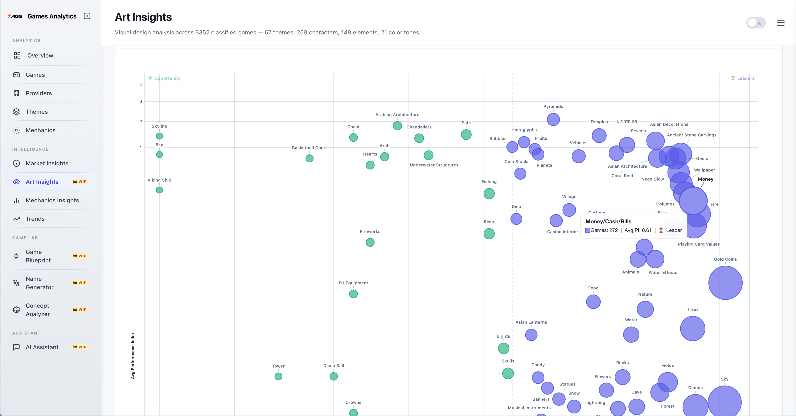
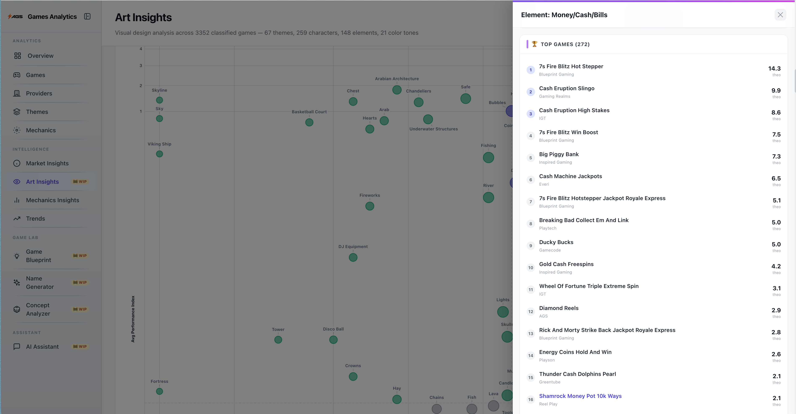
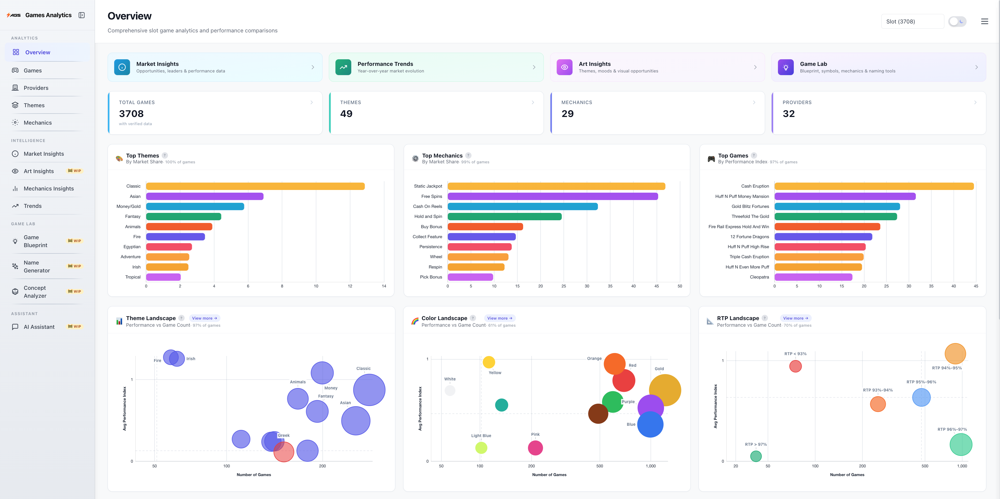
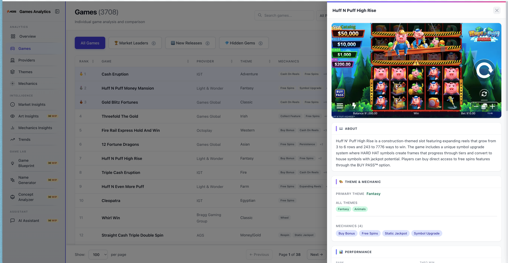
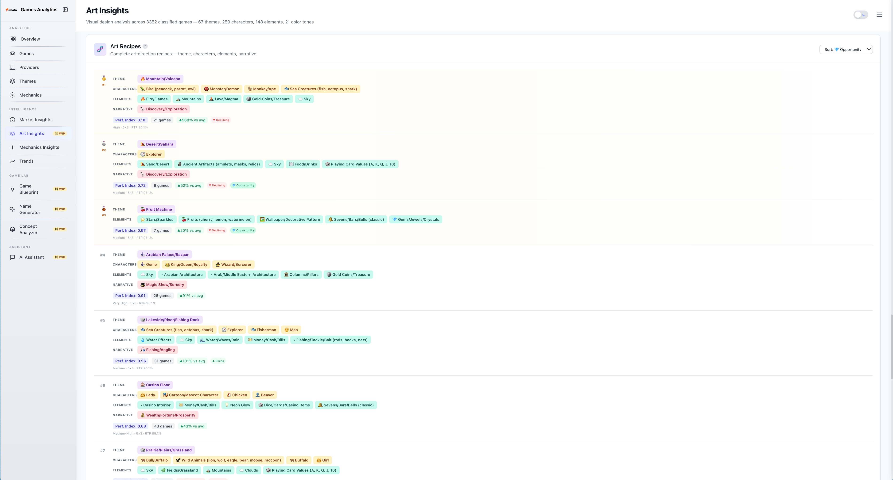
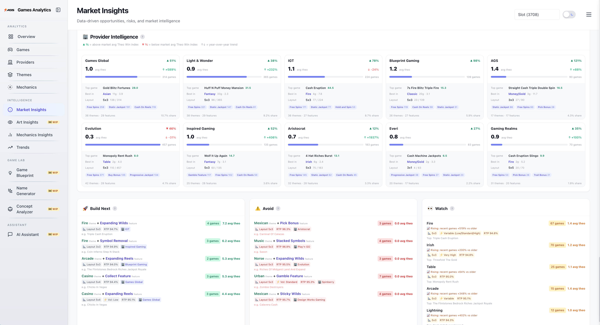
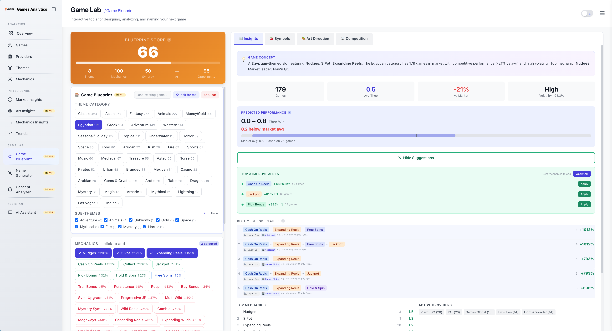
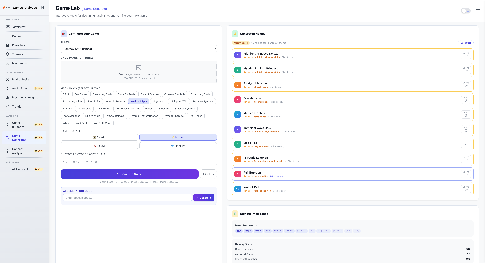
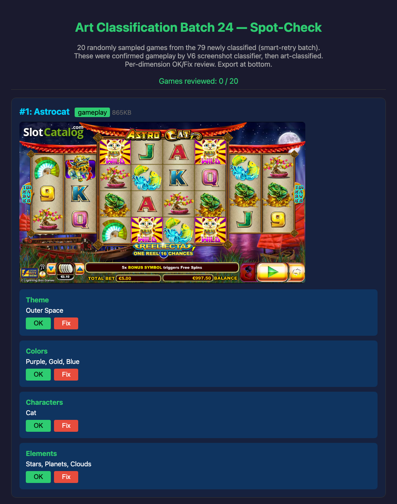
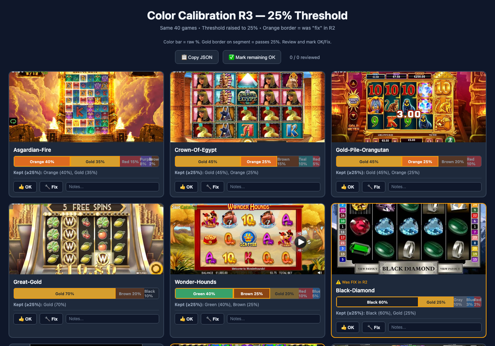

Game Analytics Tool
Using Claude Vision to connect game performance data with structured visual and mechanics data - across 5,124 games.
Problem: 5,124 games have performance data but no structured picture of how they look or play. Design decisions rely on gut feeling.
Approach: Claude Vision classifies screenshots across 6 art dimensions. Mechanics extracted from game rules pages. Everything linked to performance data.
Impact: Game designers make data-driven art and mechanics decisions based on what actually performs - replacing gut feeling and cutting research time significantly.
Pipeline Overview
Data Sources
Eilers CSV · SlotCatalog · Provider sites
Feature Extraction
Sonnet reads HTML rules
Screenshot Scraping
Playwright · ~4,050 images
Prescreen
Sonnet Vision · gameplay vs promo
Art Classification
Sonnet Vision · 6 dimensions
Unified Dataset
5,124 games · performance + design
Dashboard
DuckDB WASM · in-browser analytics
The Game Analytics Tool
How we use it
Every art and mechanics decision is backed by performance data. A designer picks any dimension - theme, element, color, mechanic - and instantly sees which choices correlate with top-performing games across the full dataset.
The Elements landscape shows all game elements (Dragons, Gold Coins, Fire, etc.) as bubbles - size is how many games use it, position is performance vs. popularity:

Elements bubble chart - "Money/Cash/Bills" highlighted: 272 games, average performance index 0.81.
Clicking it opens the full list - every game with that element, ranked by theo index. Each row shows the game name, provider, and performance score. From here you can drill into any game for its full classification, mechanics, and art data:

272 games ranked by theo index. 7s Fire Blitz Hot Stepper leads at 14.3, with provider and mechanic detail per game.
Every dimension has its own landscape chart - themes, characters, elements, colors, mechanics, narratives - performance vs. popularity at a glance:
All six dimensions have their own landscape chart - performance vs. popularity at a glance.
Overview and Landscapes
Landing page with KPIs, top themes/mechanics/games by market share, and landscape bubble charts for quick orientation.

3,708 games with verified data. Top themes, mechanics, and games ranked by performance.
Game Detail
Click any game to see its full profile - classified art dimensions, mechanics, performance index vs. theme average, and how it compares to competitors. Every data point is queryable.

Game detail panel - scraped screenshot alongside classified theme, mechanics, and performance data.
Art Recipes
Full art direction breakdowns - theme, characters, elements, narrative - for top-performing games. Low game count with high performance means untapped potential.

Art recipes: full visual breakdown per theme - characters, elements, narrative, performance index, and how it compares to average.
Market Intelligence
Provider cards showing each studio's top games, mechanics, and trend. Below: "Build Next" (high-opportunity combos), "Avoid" (saturated), and "Watch" (rising trends) - all derived from actual performance data across the full dataset.

Provider Intelligence + Build Next / Avoid / Watch strategic recommendations.
Game Blueprint
Pick a theme and mechanics to design a new concept. The tool scores it against real performance data from 5,124 games, predicts performance, and suggests data-backed improvements. The tabs below show art direction, recommended symbols, and competitive analysis - all for your selected configuration.

Egyptian + Nudges + 3 Pot + Expanding Reels → score 66, predicted performance, top improvements.
Game Name Generator
Analyzes naming patterns across 5,124 games - word count, keywords, structure - mapped to actual performance data. Suggests names based on what statistically correlates with higher-performing games in a given theme or mechanic.

Name generator: theme + mechanic input, pattern analysis, scored suggestions based on market data.
How We Built It
Vision
Scrape images
→
Filter gameplay
→
Art classify (6 dimensions)
Rules
Extract features
mechanics + symbols
Both
→
QC + human review
→
Unified dataset
Data collected via Playwright automation
| Gameplay screenshots |
SlotCatalog, BigWinBoard, provider sites |
~4,050 images |
| Game rules pages |
BetMGM, Borgata, Play'n GO, Evolution, High 5 |
~8,800 pages |
| Performance data |
Eilers CSV exports |
5,124 games |
Standard rate-limiting; most sites don't actively block. Same framework extends to lobby/placement scraping for competitive intelligence.
Screenshot Scraping
The art classification pipeline needs in-game screenshots as input - actual gameplay with the reel grid visible. These don't exist in any structured dataset, so we scrape them. ~4,050 gameplay screenshots collected from multiple sources via Playwright automation:
1
Scrape
Playwright visits SlotCatalog, BigWinBoard, provider sites. Downloads all candidate images.
2
Filter
Haiku Vision picks the gameplay image from banners, logos, and thumbnails on the page.
3
Prescreen
Sonnet Vision classifies each saved image: gameplay, promotional banner, or rules page. Only gameplay passes to art classification.
Art Classification with Claude Vision
Dual-Image Classification
We send Claude Vision two versions of each screenshot in one API call - full gameplay and a masked version with the reel grid blacked out:
Image 1 - Full gameplay
Feeds: Theme · Colors · Characters · Mood
The model sees the full game screen.
Image 2 - Reel grid blacked out
Feeds: Background Elements only
Reel area (18%-82% of frame) removed. Only actual scenery remains.
Why: Without masking, the model confuses reel symbols with background scenery. A Viking ship on the reels is a symbol, not a scene element - but it looks identical to a real ship in the background.
IS / IS NOT Classification Rules
Each dimension has explicit boundary rules. The model classifies into a constrained vocabulary - 53 themes, 26 colors, 134 character terms, 125+ elements - queryable across all games. Six dimensions total (theme, colors, characters, elements, mood, narrative); the first four undergo human review.
Example · Theme Classification
Is "Casino Floor"
Games visually set ON a casino floor - you see card tables, roulette wheels, casino interior, chips, dealers. The setting is inside a casino.
Is not
Games about money/cash/gold that have no actual casino interior. Games with multiplier symbols. "Cash" in the name does not mean Casino Floor.
Roulette table visible, dealer character, casino chips → "Casino Floor"
Gold coins, treasure chest, "Cash Blast" title → NOT Casino Floor (likely Luxury or Classic Slots)
Every dimension has multiple rule cards like this - themes have one per category, characters have 6 distinct rule blocks. All grew iteratively from real classification errors.
Quality Control
Every batch goes through human review - 50+ rounds across the project. Recurring errors become new IS/IS NOT rules. A code-enforced gate blocks production until regression passes.
Classify batch
→
Generate review HTML
→
Human OK / Fix
→
Analyze error patterns
→
Update IS/IS NOT rules
→
Re-classify errors
→
Regression test
→
Gate opens
Multi-Dimension Review
Each dimension (theme, colors, characters, elements) marked independently. Fix notes feed directly into prompt improvements.

Per-game review: screenshot + 4 dimensions, each independently marked OK/Fix with notes.
Color Calibration
The reviewer compares the model's percentage estimates against what they see on screen. Three rounds on 40 stratified games drove color accuracy from 77% to 82.5%.

Round 3 at 25% threshold. Color bars = raw model output. Gold borders = passed threshold. Orange cards = previously incorrect.
Feature Extraction + Symbols
In parallel with the screenshot pipeline above, we extracted mechanics and symbols from game rules pages.
1
Scrape rules pages
Indexes BetMGM / Borgata help pages, downloads full HTML (~8,800 pages). Strict title-matching links each to a game. Separate scrapers for Play'n GO, Evolution, High 5 Games. ~4,000 pages matched.
2
Game mechanics
Claude reads each page (text-only, no vision) and classifies into a 30-feature vocabulary (Hold and Spin, Free Spins, Megaways, etc.) with IS/IS NOT rules per mechanic.
3
Symbol names
Full paytable extraction from the same pages - wilds, scatters, bonus triggers, themed and card symbols. Each typed with function descriptions.
Same IS/IS NOT approach as art classification - each mechanic has boundary rules so Claude knows exactly what counts. 30 mechanics, each with its own rule card.
Example · Hold and Spin
Is
Special symbols LOCK on the grid, remaining positions RESPIN with a counter that resets on new locks.
Is not
Regular respins. Free spins with sticky wilds. Vague "hold-style" without lock-grid-respin-counter.
3,674 games extracted at 97% accuracy against 228 ground-truth games. Symbol names are also used as hints in the art pipeline - preventing Claude Vision from confusing reel symbols with actual characters.
Model Cascade
Different Claude models for different stages, based on task complexity vs. cost:
| Stage | Model | Cost | What it does |
|---|
| Download filter | Haiku (vision) | $0.0001/img | During Playwright scraping, pages have multiple images. Haiku picks the gameplay screenshot vs. promo banners or logos. |
| Screenshot prescreen | Sonnet (vision) | $0.003/img | Classifies each saved screenshot: is this actual gameplay, a promotional banner, or a rules page? Only gameplay passes to art classification. |
| Art classification | Sonnet (vision, cached) | $0.008/game | Full 6-dimension visual classification from the gameplay screenshot (dual-image, IS/IS NOT cards, constrained vocabulary). |
| Feature extraction | Sonnet (text-only) | $0.005/game | Reads HTML game rules pages and extracts mechanics (Hold and Spin, Megaways, Free Spins, etc.) to a 30-feature vocabulary. |
Prompt caching saves ~90% on system prompts. Batch API gives 50% off bulk runs. Checkpointed after every game.
Current Status
| Dimension | Accuracy | Status |
|---|
| Feature extraction | 97% | Production |
| Screenshot prescreen | 97.4% | Production |
| Art theme | 92% | Production |
| Art colors | 82.5% | Calibrated |
| Art characters | 90% | Production |
| Art elements | ~65% | Known vision limitation |
Elements remain hardest - spatial reasoning for background vs. reel content is a known vision model limitation.
What's Next
Now - in progress
Full coverage reclassification
Latest prompt across all 5,124 games for unified art data.
Feature combination analysis
Which mechanic + art combinations drive performance together.
Next - planned
Game naming
Naming pattern analysis - word count, keywords, structure mapped to performance.
Poster art
Layout, typography, color analysis for promotional materials.
Game types
Structural classification (concatenation, stepper, cluster).